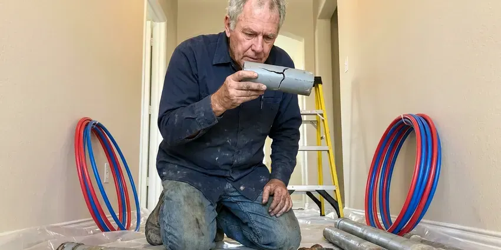

Water Line Repair in Highlands Ranch, CO
Dealing with a leaky water line in Highlands Ranch, CO? GFR Plumbing provides fast and effective repair services.
- Same-Day Leak Locating
- Prompt, reliable service
- Trenchless Options Available
- Upfront pricing

Broken Water Line? We Dig Smart and Fix It Right in Highlands Ranch, CO.
Call now and a licensed plumber will pinpoint your water line leak with electronic listening gear before anyone picks up a shovel.
Water Line Repair in Highlands Ranch, CO Done Right the First Time
At GFR Plumbing, we focus on complete water line repair for homes and businesses across Highlands Ranch, CO. We diagnose the root cause of the problem and carry out effective solutions, so your water supply is secure and efficient.
Our expertise includes:
- Trenchless water line replacement
- Main water line diagnosis and repair
- Acoustic and tracer gas leak detection on buried mains

Additional Plumbing Maintenance Services in Highlands Ranch, CO
Our maintenance and specialty plumbing services in Highlands Ranch, CO catch small problems before they become emergencies.


Customers
Why Choose GFR Plumbing for Water Line Repair in Highlands Ranch, CO?
When your water line needs attention, you need a plumbing partner you can trust to do the job right. GFR Plumbing brings years of experience to every water line repair.
- Lasting Materials, We replace failed sections with Type K copper or PEX approved for direct burial.
- Local Knowledge, Our team understands the specific plumbing codes and site conditions affecting water lines in Highlands Ranch.
- Advanced Tools, We use modern leak detection equipment and repair techniques to minimize disruption to your property.
Citywide Coverage
We repair water lines in every neighborhood of Highlands Ranch, from older homes with original galvanized mains to new subdivisions plumbed with PEX. Our trucks are stocked for the pipe sizes and meter setups used by local water providers.
Experienced Team
Our plumbers are highly trained and experienced in water line repair, dealing with everything from minor leaks to major breaks. They stay current on the latest techniques and local regulations.
Safety-First Approach
We call 811 before every dig so gas, electric and fiber lines are marked. Trenches are kept safe, and backfill is compacted to prevent settling.
Trusted Certified Highlands Ranch Plumbing Services Professionals
At GFR Plumbing, we take pride in providing licensed, certified plumbing services throughout Highlands Ranch, CO. Backed by recognized industry credentials, our experienced plumbers combine technical skill with genuine customer care. Whether it is repair, installation, or maintenance, we follow strict safety and quality standards to deliver lasting results you can trust.
Call Us Now PHCC Plumbing Contractor Recognition
PHCC Plumbing Contractor Recognition Better Business Bureau (BBB) Accreditation
Better Business Bureau (BBB) Accreditation Angi Certified Pro
Angi Certified Pro ISO 9001 Quality Management Certification
ISO 9001 Quality Management CertificationProfessional Water Line Repair Services in Highlands Ranch, CO
Emergency Water Line Repair in Highlands Ranch, CO
A burst water line is a true emergency, potentially causing extensive water damage and make your home unlivable. GFR Plumbing offers rapid-response emergency water line repair services across Highlands Ranch, CO. Our plumbers are equipped to handle sudden breaks, providing immediate shut-off and repair to prevent further damage. Don't hesitate to call us anytime, day or night, if you suspect a major water line failure. Quick action is essential to limit the impact of a severe leak.

Water Line Repair at the Meter in Highlands Ranch, CO
Leaks often start at the compression fittings and couplings right next to the meter box. Shifting soil and heavy traffic over the box can loosen those joints over time. We determine whether the leak is on the utility side or the customer side, since the water provider is in charge of the meter and the pipe before it. When the leak is yours, we replace the fittings and the customer shutoff valve in the same visit.
Slab Leak Water Line Repair in Highlands Ranch
Slab leaks, where water lines running beneath your home's concrete foundation leak, are a especially challenging issue. Housing in Colorado ranges from older homes with galvanized and cast iron pipe to fast-growing suburbs built with plastic and PEX. These leaks can undermine your foundation, leading to major structural damage. We use specialized listening devices and camera inspections to pinpoint slab leaks precisely and offer repair options including direct slab penetration, re-routing, or pipe lining. Addressing a slab leak promptly in Highlands Ranch is crucial to prevent extensive, costly foundation damage.
Main Water Line Replacement in Highlands Ranch, CO
When repairs are no longer cost-effective due to extensive damage or persistent issues, a full main water line replacement may be necessary. This often applies to older homes in Highlands Ranch, CO with original galvanized steel or polybutylene pipes that are prone to corrosion and leaks. We offer full replacement services, upgrading your system with durable, modern materials like PEX or copper for a reliable water supply for decades to come. We handle all necessary permits and inspections.
Pressure Regulator and Shutoff Repair in Highlands Ranch
Many water line problems are made worse by high incoming pressure. A failed pressure reducing valve can push well over 80 psi into your plumbing, which stresses the service line and every fixture. We test static pressure with a gauge and replace worn regulators from brands like Watts and Zurn Wilkins. We also swap seized gate valves for full-port ball valves so you can shut the water off quickly in an emergency.
Galvanized Pipe Water Line Repair in Highlands Ranch, CO
Many older homes in Highlands Ranch, CO still have galvanized steel water lines, which are prone to corrosion, rust, and reduced water flow over time. While replacement is often the best long-term solution, we can provide targeted repairs for individual leaks in galvanized pipes where practical. Our plumbers are adept at working with these older systems, carefully assessing the pipe's condition and recommending the most effective repair strategy to extend its life or plan for future replacement.
Main Water Line Leak Repair in Highlands Ranch
Most main line leaks show up as a soggy strip of yard, a sudden jump in your water bill or a meter dial that moves with every fixture off. We verify the leak by isolating the house shutoff and watching the meter. Then we use ground microphones to find the exact spot. A single section is cut out and replaced with repair couplings or a new length of pipe, and the line is pressure tested before backfill.

Underground Leak Detection in Highlands Ranch, CO
Many water line leaks occur underground, making them hard to detect without specialized equipment. Our technicians use modern acoustic and thermal imaging tools to accurately locate hidden leaks without unnecessary digging. Early detection saves you money on water bills and prevents expensive damage to your foundation. Basements are common in Colorado, and shifting soil can crack floor drains, sewer lines, and basement walls over time. Once located, we provide a precise repair plan, so the problem is resolved efficiently for your property in Highlands Ranch.
Water Line Repair Near Me in Highlands Ranch, CO
If you're searching for 'water line repair near me' in Highlands Ranch, CO, GFR Plumbing is your local expert. We prioritize rapid response times because we know a water line issue can't wait. Our team is always close by, ready to provide professional and efficient service.
Our local presence in Highlands Ranch means faster response times and a team familiar with the area's plumbing challenges. We're committed to serving our neighbors with integrity and skill, making us a top choice for water line repair near me. Trust GFR Plumbing for reliable service right in your neighborhood.
GFR Plumbing at a Glance
- Fully licensed plumbing team covering Highlands Ranch, CO
- Same-day appointments and 24/7 emergency response
- Clear written estimates, no hidden fees
- 4.8-star rated by 750+ Colorado customers
Highlands Ranch Map
Highlands Ranch Information
- Population
- 103,444
- Area codes
- 303/720/970
- Service area
- Highlands Ranch and communities within 40 miles
- Nearby
- Centennial, Parker, Castle Rock, Lakewood
Basements are common in Colorado, and shifting soil can crack floor drains, sewer lines, and foundation walls over time. Effective water line repair matters in Highlands Ranch, CO because moving ground can place heavy pressure on underground pipes, causing breaks and leaks.
Expert Services
Trust our professionals for reliable GFR Plumbing solutions in Highlands Ranch, CO.
Our Specialized Plumbing Services in Highlands Ranch, CO
At GFR Plumbing, we provide a complete range of plumbing services across Highlands Ranch, CO. From leak detection to full system installations, our team ensures fast, precise, and affordable service for both residential and commercial properties. Explore our core services below:


How Our Water Line Repair Process Works in Highlands Ranch, CO
We follow a clear, step-by-step approach so your water line repair is handled professionally and effectively in Highlands Ranch, CO.
Request a Quote
Call (720) 727-9398 and tell us what you are seeing, such as wet ground, low pressure or a high bill. We schedule a licensed plumber, often the same day.
Locate the Leak
We isolate the line, test pressure and use acoustic equipment to pinpoint the leak. You get a written repair or replacement quote before any digging.
Repair and Test
We expose the pipe, make the repair with code-approved materials and pressure test the line. Then we flush it, backfill and clean up the work area.
Frequently Asked Questions About Water Line Repair in Highlands Ranch
The cost of water line repair in Highlands Ranch, CO can vary widely, typically ranging from $500 for a minor leak repair to $5,000 or more for a full main line replacement or complex trenchless work. Factors include the location of the leak, the type of pipe, the extent of damage, and whether excavation is required. We provide a clear, upfront estimate after a thorough inspection.
Common signs include a wet or unusually green patch of yard, a hissing sound near the meter, low pressure at every fixture and a water bill that climbs without explanation. Dirty or rusty water can also signal a damaged line. If your meter moves with all fixtures off, you likely have a leak.
Yes, for most major water line repairs or full replacements in Colorado, particularly those involving excavation or changes to the main line, a permit from your local municipal authority is typically required. GFR Plumbing handles all necessary permitting so your repair is fully compliant with local building and plumbing codes.
Preventing future water line issues involves a few key steps: being mindful of landscaping near buried lines, promptly addressing minor leaks, and considering a whole-home water pressure regulator if your pressure is consistently high. Regular plumbing inspections can also help identify potential problems before they escalate. For older homes in Highlands Ranch, proactive pipe replacement might be the best long-term solution.
Trenchless water line repair is a method of fixing or replacing underground pipes without extensive digging. Techniques like pipe bursting involve pulling a new pipe through the old one, while pipe lining inserts a new, cured-in-place pipe inside the existing one. It's an great option for preserving landscaping and minimizing disruption, especially on properties in Highlands Ranch with established gardens or driveways.
Full service line replacement typically requires a plumbing permit and inspection from your city or county. Small spot repairs often do not. We pull the permit and schedule the inspection when needed.
The duration of a water line repair depends on the severity and type of repair. A simple spot repair might take a few hours, while a more extensive replacement, especially if it involves excavation or trenchless methods, could take one to three days. We always work to complete the work efficiently while maintaining solid quality.
For significant water line repairs or replacements, particularly on the main service line connected to the city supply, a plumbing permit is often required in Highlands Ranch. GFR Plumbing handles all necessary permitting on your behalf, so your repair complies with local regulations and passes inspection. This protects you from possible fines and keeps the work up to code.
What People Are Saying About Our Plumbing Experts?

Sofia M.
Two new toilets installed in one visit, no mess left behind, and the tech even adjusted a faucet he noticed was dripping. Fair pricing and really friendly.
Toilet Installation · Parker, COLaura S.
I scheduled a water heater replacement, and the team made the process smooth and affordable. The new unit works perfectly, and they cleaned up after completing the job.
Water Heater Replacement · Denver, CO
Patricia H.
We had a slab leak that two other companies could not find. GFR Plumbing located it in under an hour, explained our options, and the price matched the quote to the dollar.
Slab Leak Repair · Parker, CO
Robert G.
The trenchless sewer replacement saved our front yard. They walked us through the camera inspection footage first so we knew exactly what we were paying for.
Sewer Line Replacement · Highlands Ranch, COJames P.
Our commercial plumbing system had a leak under the sink, and GFR Plumbing handled it professionally. The plumbers arrived quickly and restored everything without disruption to our customers.
Commercial Plumbing · Lakewood, CO
Daniel K.
A pipe burst at 11 pm and they actually answered. The plumber showed up within the hour, shut everything down, and had us back to normal the next morning. Could not ask for more.
Emergency Plumbing · Highlands Ranch, CO